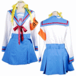

| フェーズ1 A2 1日目・2日目 | ||||||||||||||||||||||||||||||||||||||||||||||||||||||||||||||||||||||||||||||||||||||||||||||||||||||||||||||||||||||||||||||||||||||||||
| A2 1日目 | ||||||||||||||||||||||||||||||||||||||||||||||||||||||||||||||||||||||||||||||||||||||||||||||||||||||||||||||||||||||||||||||||||||||||||
・13:00〜 CG:03 出て来いジョン・スミス！
|
||||||||||||||||||||||||||||||||||||||||||||||||||||||||||||||||||||||||||||||||||||||||||||||||||||||||||||||||||||||||||||||||||||||||||
| A2 2日目 | ||||||||||||||||||||||||||||||||||||||||||||||||||||||||||||||||||||||||||||||||||||||||||||||||||||||||||||||||||||||||||||||||||||||||||
・A1でやることを達成していれば、8:00の時点で新規ブックマークを強制セットとなる。セットできないようであれば、重要なやり残しがあるので戻りましょう。
・ここは1年5組 アンケート展示で「受付係を代わる」を2回選ぶことでアイテムを2種入手。直前にブックマークして効率よく回収しましょう。
|
||||||||||||||||||||||||||||||||||||||||||||||||||||||||||||||||||||||||||||||||||||||||||||||||||||||||||||||||||||||||||||||||||||||||||
>>TOP PAGE |
||||||||||||||||||||||||||||||||||||||||||||||||||||||||||||||||||||||||||||||||||||||||||||||||||||||||||||||||||||||||||||||||||||||||||
| 【制服コスプレ衣装】 SOS団長☆ハルヒ風セーラー服セット 大人気キャラクターの制服☆セーラー服下・腕章・カチューシャ・ベルト・リボンの5点セット!! 胸元の刺繍も、腕章の「団長」も忠実に再現しました。  |
|||